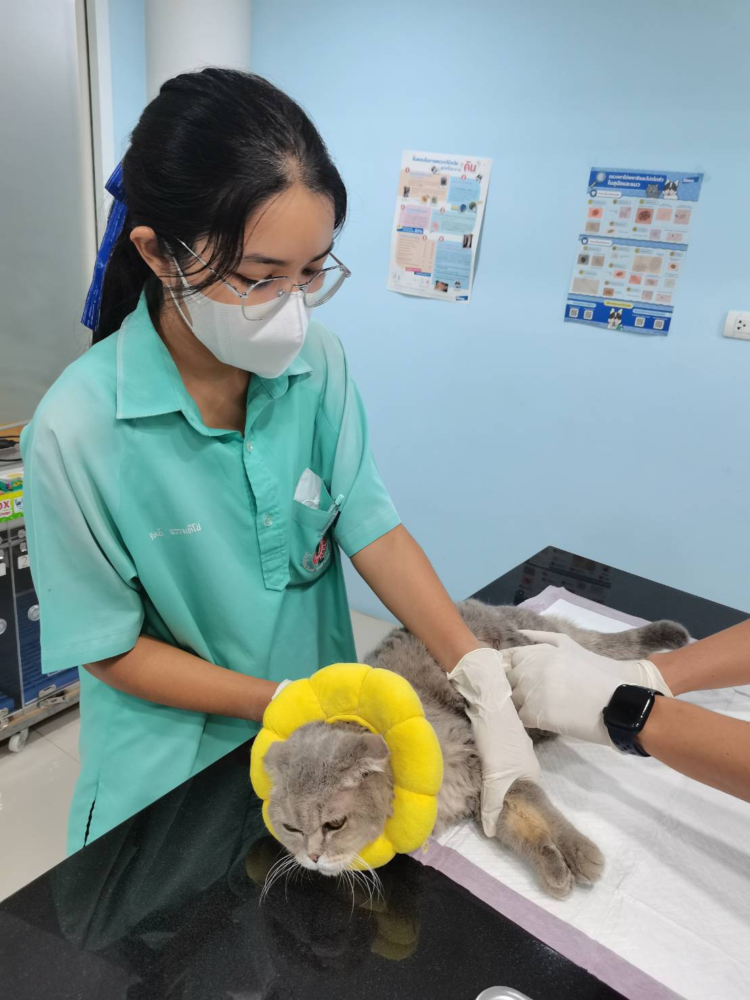
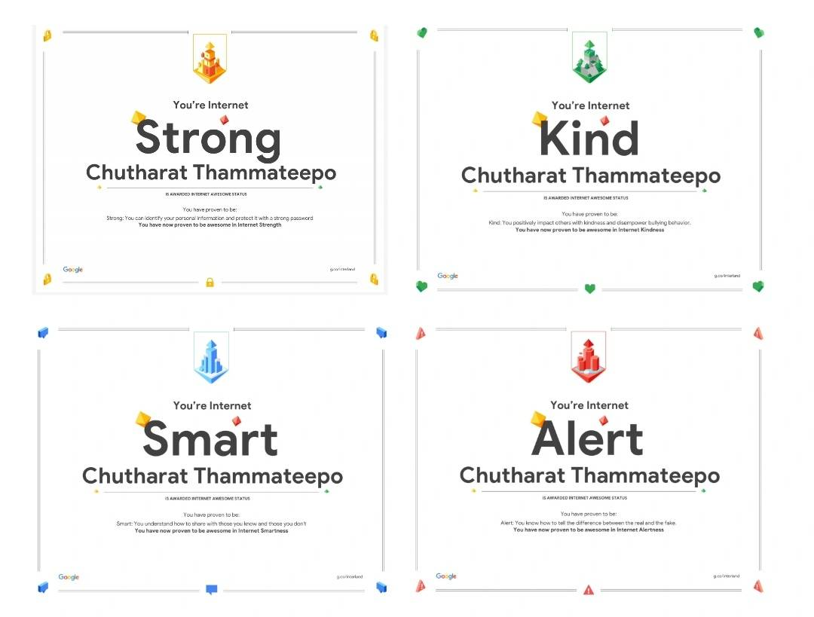
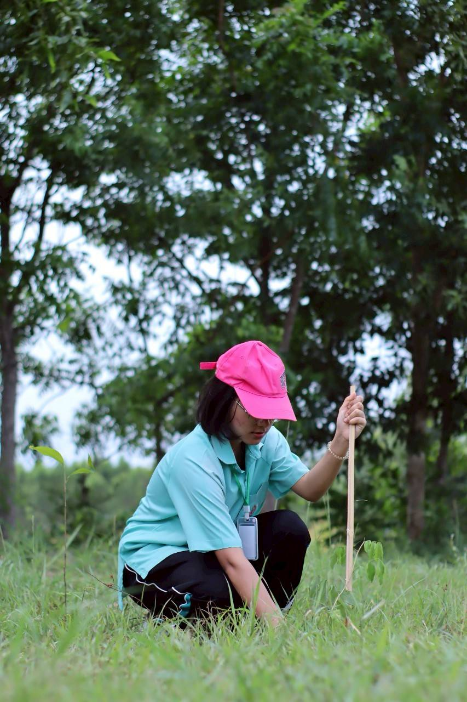

ชื่อเล่น: ของขวัญ
ชั้น: ม.6/3
เลขที่: 36
โรงเรียน: บ้านบึง "อุตสาหกรรมนุเคราะห์"
แฟ้มสะสมผลงาน (Portfolio) เล่มนี้ จัดทำขึ้นเพื่อรวบรวมประวัติส่วนตัว ผลงาน ความรู้ ความสามารถ และประสบการณ์จากการเข้าร่วมกิจกรรมต่าง ๆ ของข้าพเจ้า โดยมีวัตถุประสงค์เพื่อแสดงให้เห็นถึงความตั้งใจ ความรับผิดชอบ ความสามารถ และความสนใจในด้านต่าง ๆ ของข้าพเจ้า ผลงานและกิจกรรมที่ปรากฏในแฟ้มสะสมผลงานเล่มนี้ เป็นส่วนหนึ่งของประสบการณ์ที่ข้าพเจ้าได้เรียนรู้และพัฒนาตนเอง ทั้งจากการเรียน การทำกิจกรรม และการฝึกประสบการณ์ ซึ่งช่วยให้ข้าพเจ้าได้เรียนรู้การทำงานร่วมกับผู้อื่น การแก้ไขปัญหา และการนำความรู้ไปประยุกต์ใช้ในสถานการณ์จริง ข้าพเจ้าหวังเป็นอย่างยิ่งว่าแฟ้มสะสมผลงานเล่มนี้ จะช่วยแสดงให้เห็นถึงตัวตน ความสามารถ และพัฒนาการของข้าพเจ้าได้เป็นอย่างดี และเป็นประโยชน์ต่อผู้ที่เข้ามาศึกษาแฟ้มสะสมผลงานเล่มนี้
ชื่อ-นามสกุล: น.ส.จุฑารัตน์ ธรรมทีโป
ชื่อเล่น: ของขวัญ
วันเกิด: 26/08/51
อายุ: 18 ปี



s34530@banbung.ac.th
0616050355